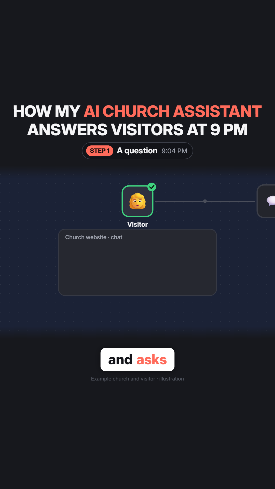
00:03.5At 9pm, aVisitor: chat
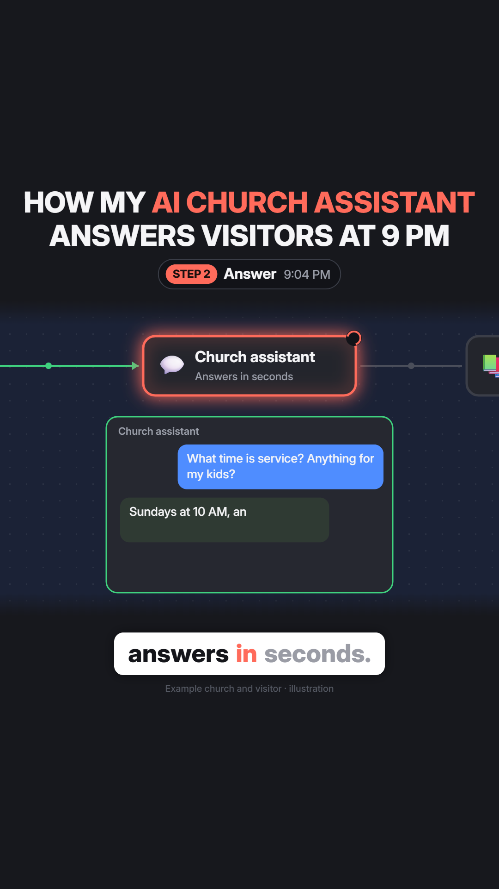
00:08.9My church assistant answersChurch assistant: chat
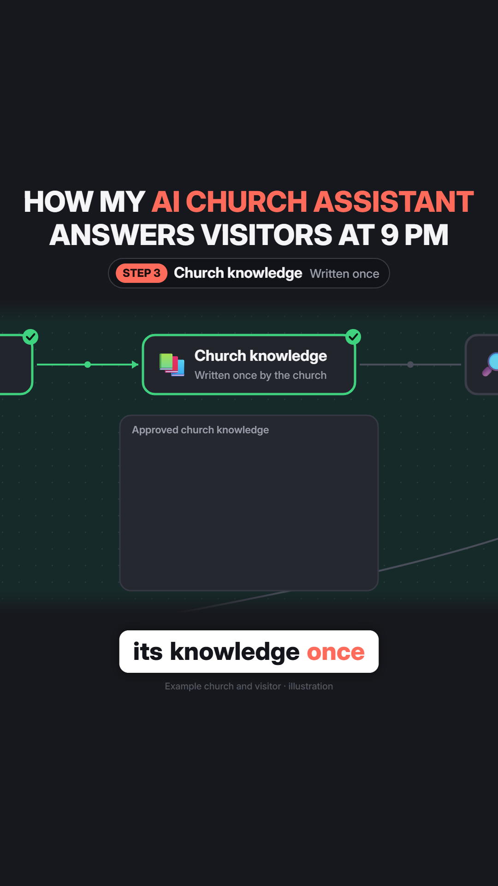
00:13.5But it doesn't makeChurch knowledge: kv
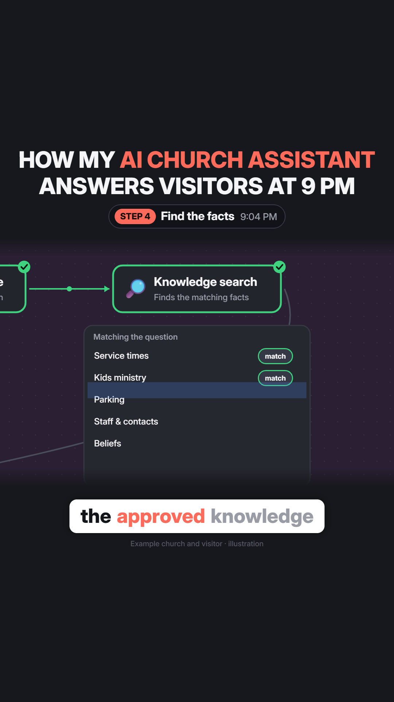
00:21.8When a question comesKnowledge search: list
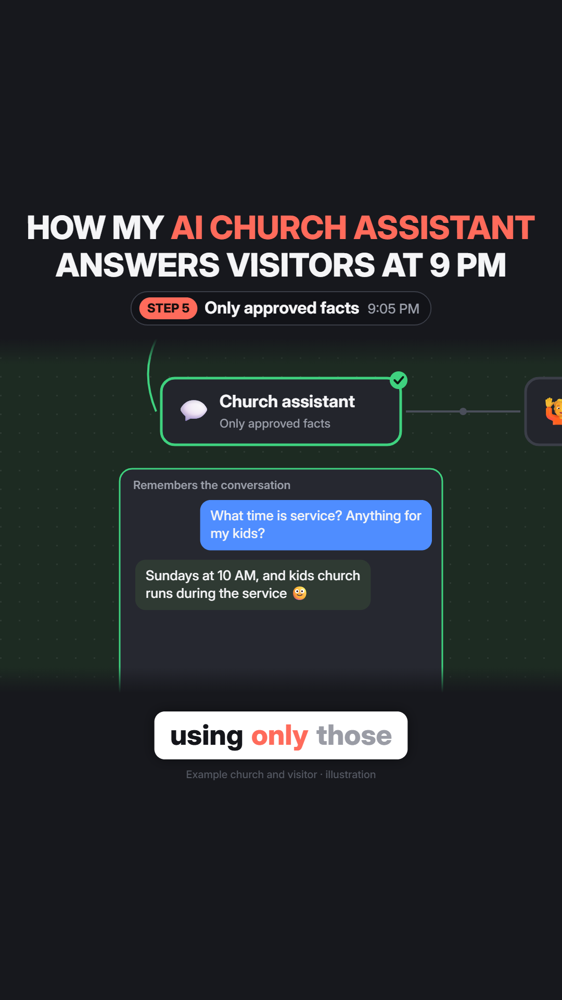
00:27.1Then it answers likeChurch assistant: chat
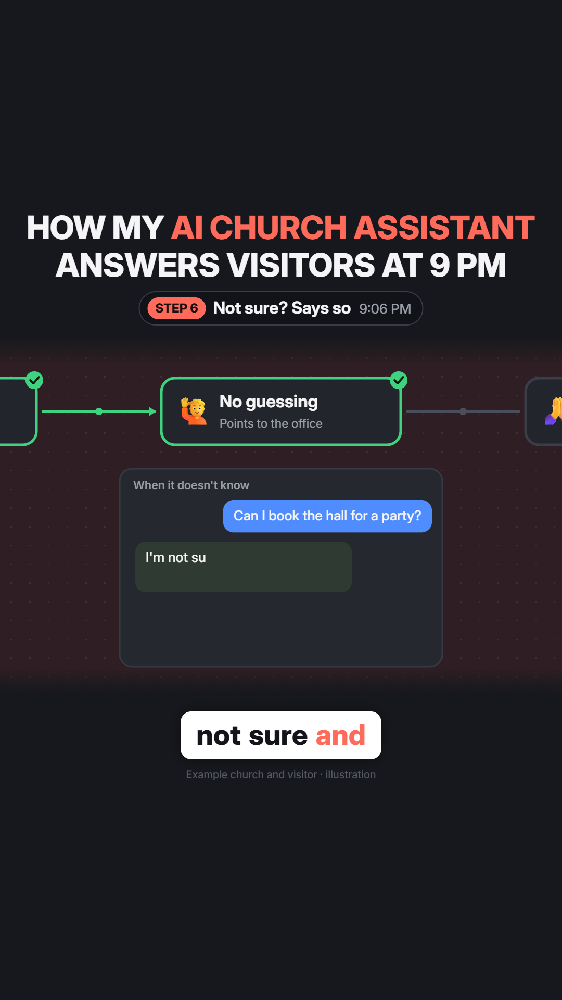
00:36.5If the answer isn'tNo guessing: chat
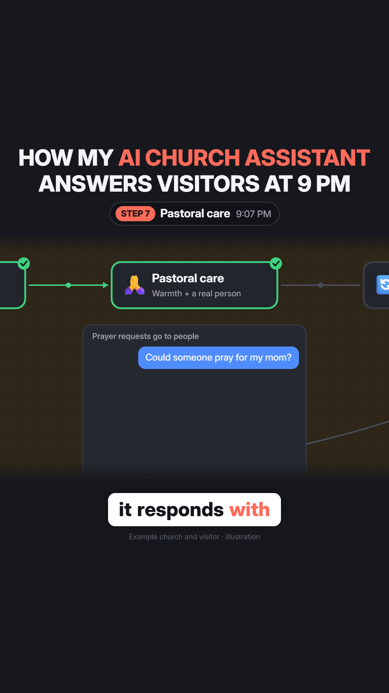
00:43.4If someone shares aPastoral care: chat
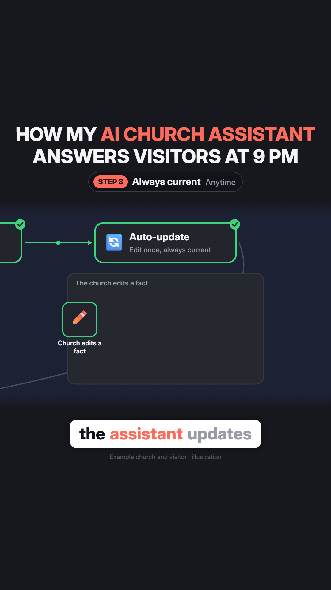
00:48.9And when the churchAuto-update: steps
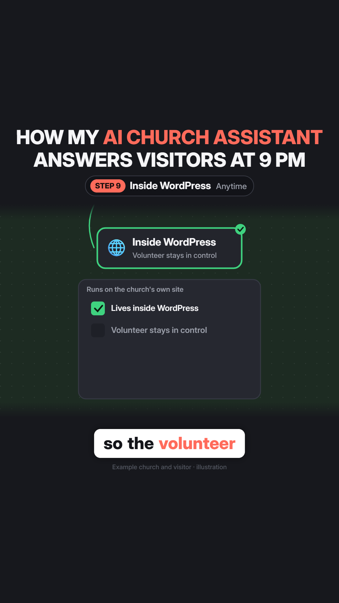
00:53.5It lives right insideInside WordPress: checklist
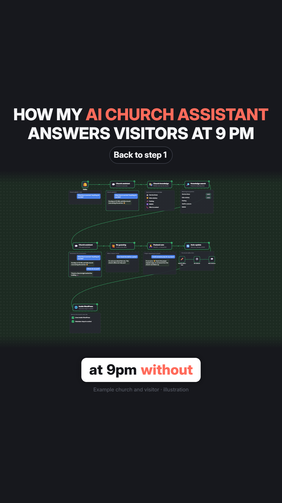
00:58.5It's a front doorZoom out over the whole workflow.
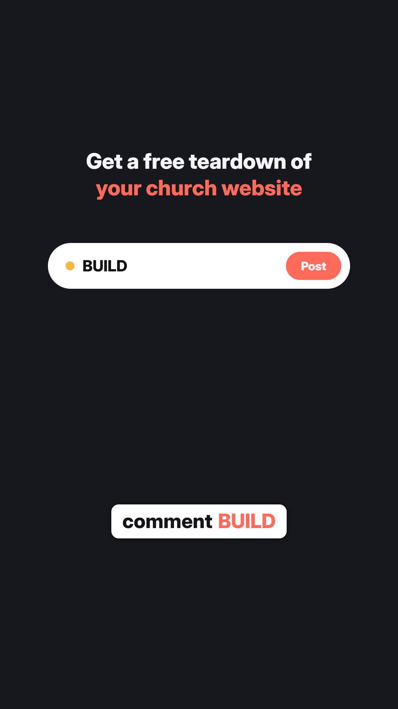
01:04.0If you lead aComment BUILD.